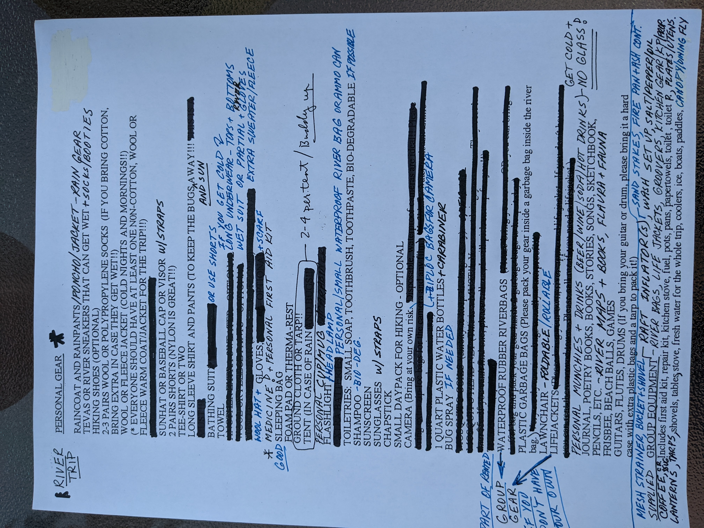

Main Fork of the Salmon
June 12 - 17, 2021
Overview
This long awaited private river trip is launching on the Main Fork of the Slamon! We'll be pushing off Saturday June 12, 2021 from Corn Creek, Idaho. Here are some facts about the trip at a glance:

- Main Fork of the Slamon is the lower section of the Salmon River, below the infamous Middle Fork on the Salmon River which is historically known as The River of No Return. This wild river makes its way through the second deepest gorge on the continent; only Hells Canyon on the Snake River is deeper. The Salmon's granite-walled canyon is over 1,000 feet deeper than the Grand Canyon. For approximately 180 miles, the Salmon River canyon is more than a mile deep. Another fun fact, the river gradiant is steeper than the Colorado river in the Grand Canyon.
- What about permits? Michael Polacek has diligently worked with the Forest Service to secure permission to launch pre-seaon.
- Rapid rating III-IV. We can expect early season snow melt run off.
- Will there be Tiki Torches? Why yes. Back by popular demand.
- What do I need to bring? More details below.
| On the river | Day | Distance |
|---|---|---|
| Day 1: Put in at Corn Creek, Idaho | Saturday June 12th | 13 river miles |
| Day 2 | Sunday, June 13th | 13 river miles |
| Day 3 | Monday, June 14th | 13 river miles |
| Day 4 | Tuesday, June 15th | 13 river miles |
| Day 5 | Wednesday, June 16th | 13 river miles |
| Day 6: Take out at Cary Creek, Idaho | Wednesday, June 17th | 13 river miles |
| Total | 80.7 river miles |
River High Lights
- Mile 0: Put-in at the Corn Creek Boat Ramp. The USFS will check for permits and equipment here.
- Mile 8: Rainer (III) is the first good sized rapid and Rainer Creek enters just downstream on the right. Read 'n run.
- Mile 9: Alder Creek (III) is another good sized rapid. Read 'n run.
- Mile 11: Lantz Rapid (III) is another good sized rapid. Read 'n run.
- Mile 20: Black Creek (III-IV) this rapid requires a stop to scout. (Shane, recommends left run.) Scout this rapid.
- Mile 22: Hot Springs. This is a required stop.
- Mile 32: Baily (III) this rapid requires a stop to scout, river right. Scout this rapid.
- Mile 34: Five Mile (III) "this is a rapid you wish you could scout, but you can't. Tight but go right clean." Rean 'n run
- Mile 37: Big Mallard (III-IV) this rapid requires a stop to scout, on river right at Yellow Pine. Scout this rapid.
- Mile 40: Elk Horn (III-IV) this rapid requires a stop to scout, on river left. (run it left or right!) Scout this rapid.
- Mile 77: Chitam (III-IV) this final rapid that requires a stop to scout, on the right. Scout this rapid.
- Mile 78: Vinegar (III-IV) last big rapid, with boat ramp only 2 miles away. Read 'n run!
- Mile 80: Carey Creek boat ramp. Take-out.
River Safety Tips
These videos are a bit old, but the message is very informative. Please watch, especially if you haven't been on a river trip in a while. There's some very useful water safety instructions.
How to swim in swiftwater. What to wear on the river.Your spot is Reserved!

However, if you haven't paid your $250 deposit to Mike Polacek please do so as soon as possibl.
All costs for the trip, except for your personal items, will be equally divided so keep your receipts.
Note well: This is a bring your own booze trip, with plenty to share.
A quick search will reveal that a typical 5 day commercial river trip costs $1689. Our goal is to keep total cost to around $500 per person, including fuel to and from the river, food, car shuttle, and boat rental.
| Boater | Title |
|---|---|
| Michael Polacek | Permit wrangler & trip organizer |
| Lynne Dickey | River diva |
| Henry Polacek | Super chill river guide |
| Anthony Foster | Henry's friend who some of us have met |
| Chuck Schamel | Cataraft rescue team & ultimate coffee guru |
| Chey Martineau | Friend of Chuck's |
| Jeff Sharp | Former kayaker |
| Gleed Toombes | Kayaker & oh so smooth through the bumps |
| Bruce Nagel | Paddle Boarder & wave can never be too big |
| Robert Volker | Tiki torch geek |
| Frank Schmuck | We're safe, he knows a doctor |
| John Major | River Minstrel |
| Marti Major | River Minstrel II |
| Cill Franco | Ranger Cill |
| Jim Carter | This is gonna be fun! |
| Harry Carter | Sure, ok I'll row Lava |
| Tom Harrison | Captain Harrison |
| Dave Harrison | River role-play master |
How to get to the put in
The Corn Creek Boat Launch and Campground is 442 miles from Salt Lake City (Google Maps this an 8 hours+ drive). The preferred route is I-15 to Idaho Falls, Idaho at exit 143 follow state highway 28 to Salmon, Idaho from here follow US Highway 93 north to North Fork, Idaho. Here turn left, west onto a dirt road to Corn Creek Boat Launch and campground.
What to Expect
5 rafts, 1 cataraft, 1 kayak, and 1 standup paddle board to carry all 18 of us downstream 80 miles to Carrey Creek. There will be enough rapids to making this a very exciting trip. The gradient of this river is steep, so it's all downhill towards the Pacific -it's gonna be fast! Even at normal flows this section of River is moving quickly, which awlays surprises every boater. There's no flat water, no rowing hell like Deso.
Private Trip. This is a self guided private trip, which means that we get to do everything. Yep that's right, everything, and we mean everything. Sure we do everything, and that's what makes a private trip so great. There will be a lots to do every day after the thrills and spills on the river. With the fast river flow there'll be plenty of time to relax or go for hikes. Then the very next day we'll break down camp, load and rig the boats. Rigging the boats can take a bit of time, but once we've pushed off life is so good. There will be some pucker-factor moments. Scouting the major rapids, knowing that there's only one way to go no matter what.
Shared meals. This is an opportunity to show off your best camp cooking skills. Please keep in mind that this group on previous trips has set the bar high. So do your best and impress us. Give us your best outdoor river cooking.
River. The water flow is not controlled so water level will fluctuate according to the dictates of nature. We've been watching the predictions, snow pack is below normal and the expected flow is normal or below, which means a green-light, so the trip is a go. The water temperature will be cold to cool, this afterall early June, so please plan accordingly.
Bugs. Generally not problem on this section of river due to the early season and flow water. However, be prepared for a hatch just in case.
Climate. Daytime temperatures highs could be in the 70's or 80's with lots of sun and lows in the 40's or 50's. However, typically many early June trips experience highs in the 50's with rain and lows in the 30's. Yes, it could even snow, but we don't expect freezing temparatures. Based on historical averages, the daytime high temps could be 70-80° (78° mean) with nighttime lows somewhere in the 40-50° (46° mean). When on the river there could be full exposure to the sun, so it could be hot or cold. All things considered, the experts tell us that this is a great time of year to be on the river!
What to Know, Before You Go
- Boating in the Main Fork of the Salmon Info from National Forest Service
Some highlights include:
- Be Prepared. This is a river trip into the rugged wilderness. Backcountry travelers must be prepared for varying, unpredictable weather conditions and should be aware of potential dangers in this environment.
- All garbage, both organic and inorganic, will be carried out.
- Groovers (toilets) are provided by our group at each campsite. Backcountry regulations require that human waste and toilet paper be packed out of the backcountry. In short, we'll all share in the duties of taking care of this nasty little necessity.
- Respect for cultural sites. All natural objects and cultural artifacts are protected and must be left where they're found.
What to Bring
Each individual will be responsible for the following items.
Please try to get as much of your gear as you can into a single large river bag. (Your large dry bag, however, is not available while on the river). River bags will be rented along with our boats for your use. Please let us know if you need a river dry bag.
Check list
- River gear
- Sleeping gear
- Camp gear
- Colthing nighttime/cold (layers)
- Colthing daytime/warm
-
PFD | if you don't have one we'll rent one for you.
-
Large River dry bag | if you don't have one we'll rent one for you.
-
River shoes or sandels | (or river booties) protect your feet in the event you take a swim.
-
River scocks | (cold & sun) no cotton, some like neoprene socks with sandels
-
Cold River wear | dry top & pants or rain jacket & rain pants
-
Cold layers | polyproplene top & bottom (or neoprene)
-
Warm layers | river shorts & quick dry underwear
-
River gloves | cold and sun (optional)
-
Sun protection | sun glasses, hat, sun screen, sun shirt, sun sleeves, buff, sarong, etc.
-
Carabiners | nice for clipping-in your water bottle & day-use dry bag
-
Hydration system | Water bottle, beer, soda, etc.
-
Tent | small lightweight tent (consider sharing to save packing space)
-
Sleeping bag & pad | small lightweight pillow
-
Camp chair | everyone is responsible for bringing their own camp chair.
-
Coffee mug | used at breakfast and dinner
-
Toiletries | toothbrush & paste, soap, towel, bug spray, etc.
-
Headlamp | flashlight
-
Sun protection | hat, sunglasses, sunscreen, etc.
-
Pesonal | Medication, camera, etc.
-
Towel | small towel and wash cloth
-
Hat | warm wool or synthetic beanie/stocking cap
-
Jacket | fleece or lightweight down jacket
-
Wet weather gear | jacket with hood and rain pants (to wear on river too)
-
Long base layers | top and bottoms, polyproplene (to wear on river too)
-
Gloves | lightweight (glove liners work great)
-
Pants | jeans or synthetic
-
Shoes | Hiking shoes, something to keep your feet dry
-
Sockets | 2 pair polyproplene (could be worn on the river too)
-
River shorts | 2 pair of synthetic quick dry shorts to wear on the river and in camp
-
Underwear | for some of us, at camp time it's time to get out of the synthetic
-
Short sleeve | 2 t-shirts or quick dry shirts
-
Footwear | flip flops or light weight shoes, at camp it's time to get out of the wet shoes.
Pro Tips
- Since weather conditions can be unpredictable, a small day-use dry bag to carry rain gear or suns gear that you may need on the river during the day.
- Pack light! Dirty on a river trip is quite fasionable. If we're lucky with warm weather we can wash clothes. Besides that, we have to haul everything.
- Small soft duffel bag to transport all your shiz to the put-in. You'll stuff the contents from your duffel into your river dry bag.
- Sun glassess. Croakies or Chums or something to keep them from floating away.
- Pillow, small camp pillow stuffed at the bottom of your dry bag.
- Plastic bags. (There will some available at Friday night's camp). Garbage sized for wet clothes in dry bag, and several ziplock freezer size.
- Clothing for the car ride. Left in the car at the put-in, so after getting off the river you'll have something a little fresher to wear for the long ride home.
- Any questions about what to bring please ask your river buddies (call us).
Michael's 20 year old packing list (click on it to read)
What do the outfitter's suggest to bring and wear?
Both suggest a duffel bag. This is for transporting your personal gear to the put-in, and then into your dry bag it goes.
Who's driving & who's riding

A clean windshield, a full tank of gas and shoe shine! Salmon River here we come.
Friday we're on our own for meals. It's a good idea to bring snacks, water, etc. for the long ride to Corn Creek.
Idaho Falls for lunch. It's also a great place to purchase beer at Idaho discount rates.
Drivers: you're responsible for coordinating the car shuttle! Details will be provided.
Drivers: you must have a 2nd key, this is required.
| Driver | Vehicle | Passengers |
|---|---|---|
| Chuck Schamel | Truck & trailer | Chey, Lynne, Henry, & Anthony in Pocatello |
| Frank Schmuck | Truck & Trailer | Mike, Gleed & Bruce |
| Robert Volker | 4Runner & roof box | Marti, John & Jeff |
| tbd | tbd | Jim, Tom, Dave & Harry |
| Cill's shuttle service | Transport from California | Cill |
Departure schedule - Friday June 11th
- 8:00 AM Meet at U of U outdoor recreation to pick up boats and load gear.
- 10:00 AM On the road for Corn Creek, Idaho.
Car Shuttle
9 hours, 378 miles from put-in to take-out. Consequently this labor intensive shuttle is very expensive. Garunteed when you arrive at the take-out and your car is there, and it's in one piece and drivable, you'll agree that it's worth every penny.
- Drivers: must read: Help us, help you. From another shuttle company but informative.
- Drivers: Very important!<== This is your contract for each driver!
Water Flow
Keeping our eye on the changing conditions.
If you add the two Shoup, ID readings, one for the Salmon and one for the Middle Fork, you will get the flow at Corn Creek.
Downstream at river mile 36, just before Big Mallard, there's a river monitoring station at Yellow Pine.
MF SALMON RIVER AT MOUTH NR SHOUP, ID
Weather
Resources
River info
Floating the Salmon, US Forest Service>
National Wild and Scenic River SystemSun & Moon
Excellent site for Sun and Moon (be sure to select the month of June)2021 June Sun Graph for Salmon
Moonrise, Moonset, and Phase Calendar for City of Salmon, June 2021